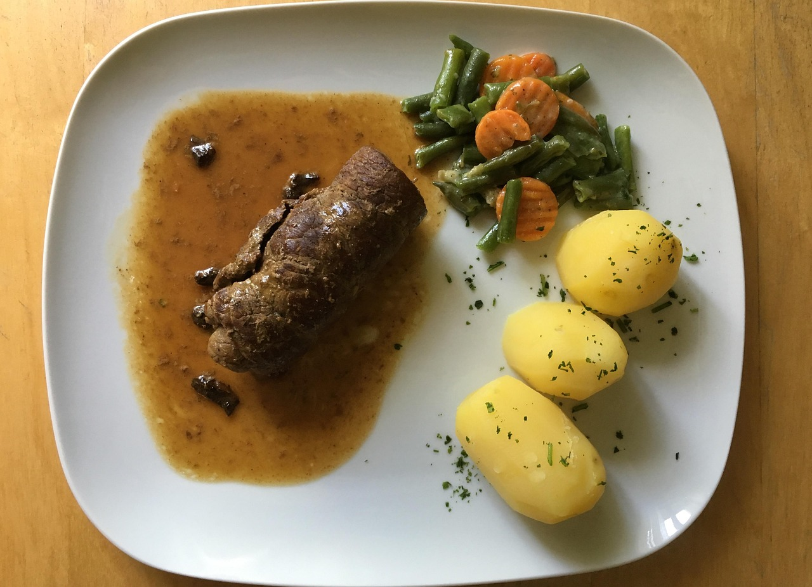

Rinderroulade

| 1 große Rinderroulade (aus der Oberschale, ca. 180-200g) |
| 2 Frühstücksspeck (durchwachsen) |
| 1 Gewürzgurke |
| 1 kleine Zwiebel |
| 2 TL mittelscharfer Senf |
| 1 EL Butterschmalz oder Öl |
| 1 EL Tomatenmark |
| 100 ml Rotwein (trocken) |
| 250 ml Rinderfond (oder Brühe) |
| 1 Lorbeerblatt |
| 1 Nelke |
| 250 g Kartoffeln (festkochend) |
| etwas Stärke oder Soßenbinder |
| Salz und Pfeffer |
Zubereitung
Vorbereitung
Roulade flachklopfen, salzen, pfeffern und mit Senf bestreichen. Zwiebeln und Gurke in Streifen schneiden. Mit Speck auf die Roulade geben, einrollen und mit Küchengarn oder Zahnstochern fixieren.
Anpraten
Butterschmalz in einem kleinen Topf erhitzen, Roulade rundherum scharf anbraten und herausnehmen.
Schmoren
Das gewürfelte Gemüse im Topf anrösten, Tomatenmark kurz mitbraten. Mit Rotwein und Rinderfond ablöschen. Roulade zurück in den Topf geben und bei niedriger Hitze ca. 90 Minuten schmoren.
Beilage
Kartoffeln schälen und in Salzwasser ca. 20-25 Minuten kochen.
Soße
Roulade herausnehmen. Die Soße durch ein Sieb passieren oder das Gemüse für eine sämigere Soße pürieren. Nach Belieben mit etwas Stärke binden und mit Salz/Pfeffer abschmecken.